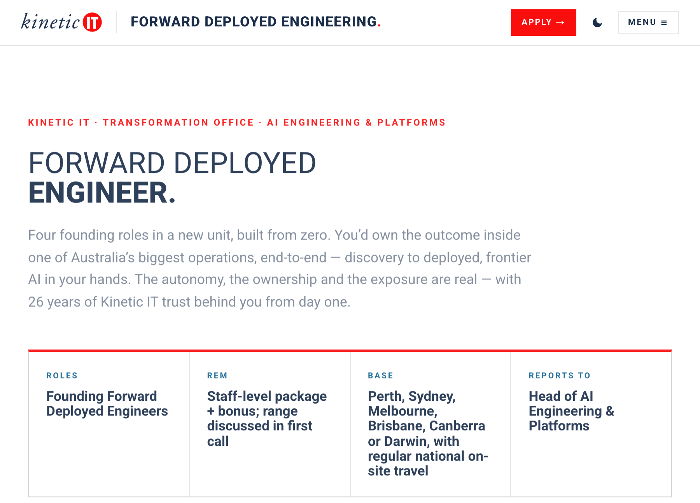
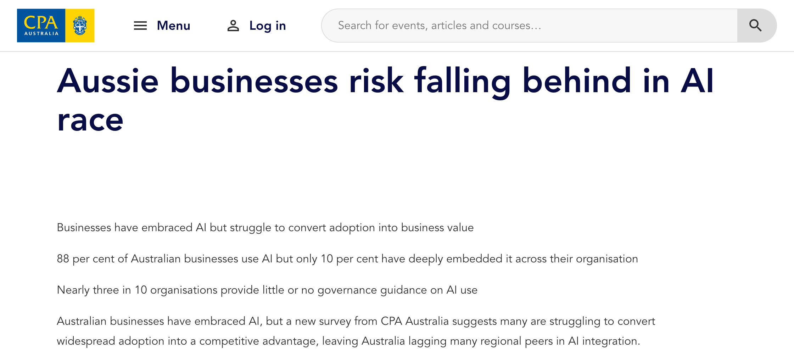
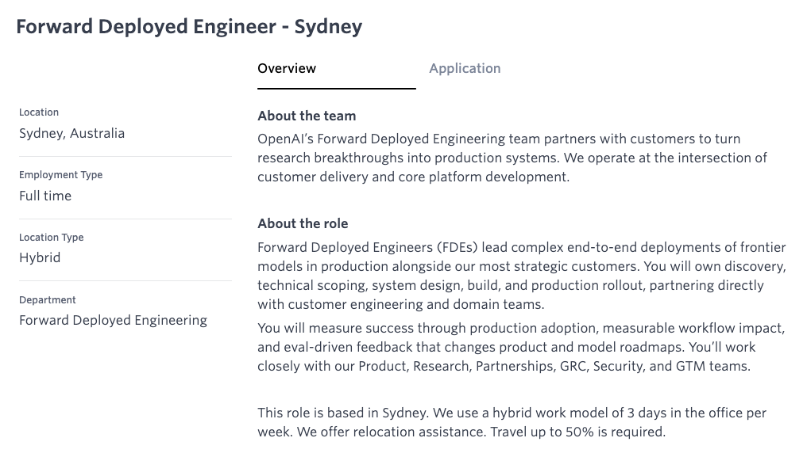
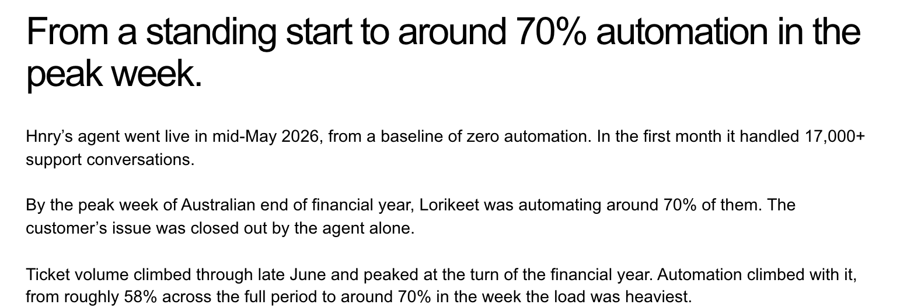
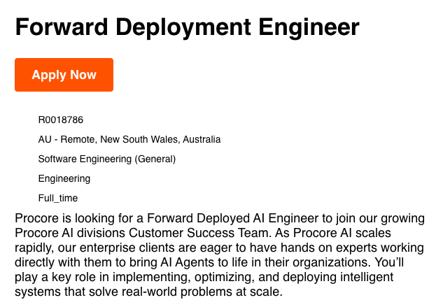
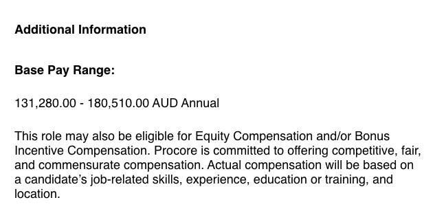
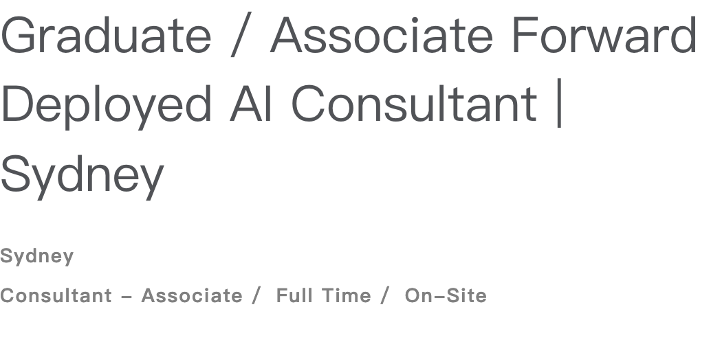

复制后粘贴到公众号编辑器。
澳洲在招 FDE，这份 AI 工作怎么入行？
澳洲本土公司为什么一次招四名 FDE？从真实招聘和公开年薪看，哪些人适合往这个方向走。
澳洲 IT 服务商 Kinetic IT 在招聘页里举了个例子。为了核对一件事的进度，员工有时要翻六套系统。哪一步值得用 AI 改，得先去现场看人怎么做。
这家公司为新团队列出 4 个创始 FDE 岗位。悉尼、墨尔本、布里斯班等六城都能作为工作基地，员工要定期到澳洲各地的客户现场。从发现问题到交付上线，都是职责的一部分。

大厂也在单独为这种工作组队。2026 年 6 月，AWS 宣布投入 10 亿美元建设全球 FDE 组织。它在澳洲发布的资深岗位可在悉尼或墨尔本工作，职责包括和客户工程团队一起开发、部署、运行 AI 系统。AWS 公告 · 澳洲招聘
澳洲企业已经在用 AI，为什么还需要 FDE？
CPA Australia 的 2026 年调研给了一个本地线索。澳洲样本所代表的企业中，88% 已使用 AI，10% 已把 AI 深入用到整个组织的运营中。这份调查在五个市场访问了会计和财务从业者，这两个比例取自澳洲样本。

用 AI 写一封邮件，当天就能开始。要让 AI 回答一张真实工单，得先知道它能查哪些数据、该用哪条规则、遇到例外该交给谁。上线以后，还得有人回看错误和使用情况。
FDE（Forward Deployed Engineer，前线部署工程师）就是跟客户一起做这段工程的人。OpenAI 的悉尼职位把职责写得很具体。从厘清需求、确定范围、设计开发，一路负责到生产上线。上线后看实际采用和业务流程有没有改善。该岗位看重至少 5 年工程或技术部署经验，其中包括直接和客户合作。

澳洲报税服务商 Hnry 就遇到了这类问题。财年末咨询量上来，团队先把常见、答案明确的问题交给 AI，把需要判断的个案留给人工。按供应商 Lorikeet 公布的数据，AI 上线首月处理了 17,000 多次客服对话，在澳洲财年末高峰周约 70% 的对话由 AI 独立解决。

澳洲 FDE 的年薪，招聘页上怎么写？
先看一份实际工程岗。建筑软件公司 Procore 的澳洲新州远程 FDE 职位公开了 A$131,280–180,510 基础年薪。它看重已有的大模型项目经验、编程和客户沟通能力，符合条件还可能获得奖金或股权。


资深岗再看本地成交参考。澳洲招聘机构 Re:Sourced 按自身经手、候选人已接受的 2026 年资深 FDE offer 统计，中间一半的基础年薪区间为悉尼 A$18万–24万、墨尔本 A$17.5万–23万、布里斯班 A$16万–21.5万。这是该机构的样本，super、奖金和股权另计。Re:Sourced 薪资报告
刚毕业的人也有相邻入口。ADAPTOVATE 的悉尼 Graduate / Associate Forward Deployed AI Consultant 标了 A$10万–12万年薪，面向应届、近期毕业或有约三年以内相关经验的人。它是偏咨询的交付岗位，工作同样涉及和客户一起做原型、测试和推进实施。

FDE 到底要会什么？越往上走，越要会做取舍
回到开头那个要翻六套系统的例子。假设客户说「我们想用 AI 处理发票」。坐到财务同事旁边看一会儿，你可能会发现，录金额挺快，费时间的是查这张票有没有付过、能不能找到对应的采购单。
知道卡在哪，才好动手。先让系统读出供应商、金额和 GST，再去对采购单。对不上，就把原始发票和差异一起交给财务确认。把这段流程亲手跑一遍，你会发现哪些步骤可以交给 AI，哪些判断得留给人。
真让一个部门试用，问题就具体了。同一张发票发来两次，台账会多一条吗？系统写到一半断了，重跑会发生什么？工程师得把这些情况提前测过。等财务接手，他们还得能查到哪张票卡住了、该找谁处理。
到了评审会上，财务问「能不能直接入账？」IT 目前只批准读取系统里的数据。资深 FDE 要做的，是在这些条件下定第一期交付。可以先做核对和异常提示，入账照原流程走。先用一批已经人工核对过的旧单，看看系统漏掉了哪些重复和差异。再选一个部门试用，把人工复核的时间也算进去，跟财务一起决定值不值得扩大。
如果你已经会开发，下次需求会可以跟着业务同事走一遍原流程。如果你做过财务、运营、产品或咨询，就挑自己熟悉的一段工作，亲手搭个原型，看看用的人会在哪一步停下来。以后面试聊到这个项目，最有东西可讲的就是你当时看见了什么，后来又为什么改了方案。
想按自己的工作背景继续练，可以看看下面两个 FDE 进阶方向。